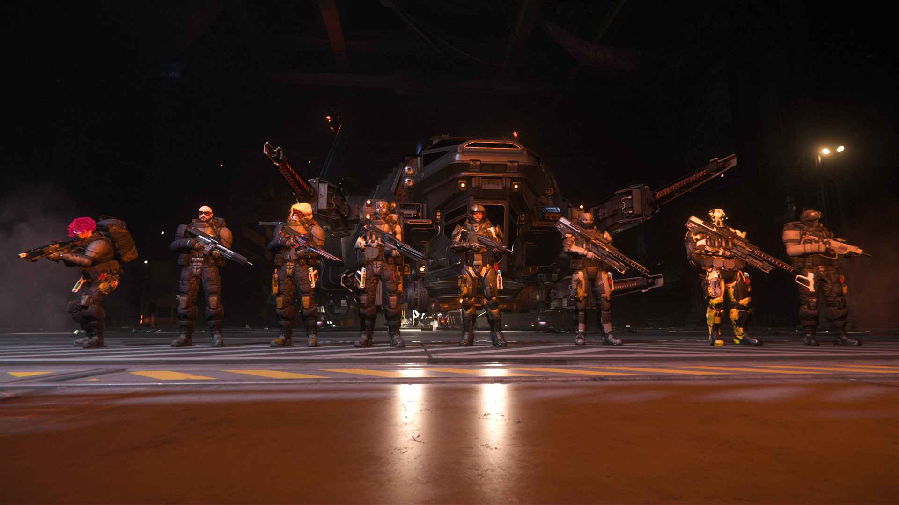

Rólunk
A Hungarian Space Corporation (HSC) a Star Citizen univerzum egyik legnagyobb és legaktívabb magyar közössége. Küldetésünk, hogy egy összetartó, baráti közösséget építsünk, ahol mindenki megtalálja a helyét — legyen szó felfedezésről, kereskedelemről, harcról vagy bármilyen más tevékenységről a Stanton és azon túli világokban.
Kik vagyunk?
Mi, a HSC tagjai, nemcsak játékosok vagyunk — egy olyan közösséget alkotunk, ahol a barátság, a közös célok és a jó hangulat a legfontosabb. Discord szerverünkön napi szinten aktív a kommunikáció, szervezett eseményeket, küldetéseket és közös kalandokat élünk át a Star Citizen világában.
Mit kínálunk?
- Szervezett események: Rendszeresen tartunk közös küldetéseket, szervezett eventeket.
- Tapasztalt csapat: Tagjaink között megtalálhatóak veterán pilóták, profi kereskedők, felfedezők és harcosok is.
- Baráti közösség: Nálunk mindig számíthatsz egy segítőkész csapatra, akár kezdő, akár haladó játékos vagy.
- Oktatás és támogatás: Ha új vagy a Star Citizen világában, mentoraink segítenek eligazodni.
Csatlakozz hozzánk!
Ha szeretnél egy aktív, összetartó és lelkes magyar közösség tagja lenni, ne habozz! Csatlakozz a Discord szerverünkhöz, és kezdjük el együtt meghódítani a csillagokat!
Légy Te is a HSC tagja!
Szeretnél egy dinamikus, elhivatott csapat tagja lenni, akik együtt hódítják meg a Star Citizen univerzumát? Jelentkezz most, és válj a Hungarian Space Corporation csapata részévé! Minden jelentkezést elbírálunk, és várjuk a bemutatkozásodat is!
JELENTKEZÉS